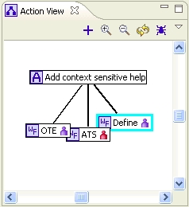

ATS Action View

Purpose
Shows a graphical representation of the currently open Action or Team Workflow.
How to do it
Double-click open any Action or Team Workflow. Action View will show parent child
relationship between Action and it's children Team Workflows. Cyan outline show currently
open editor.
ToolTip
Hover over any object to determine information about current state, assignees and work to be done.
Double-Click / Right-Click
Double-Click to open any object in the ATS Editor or right click for more options.